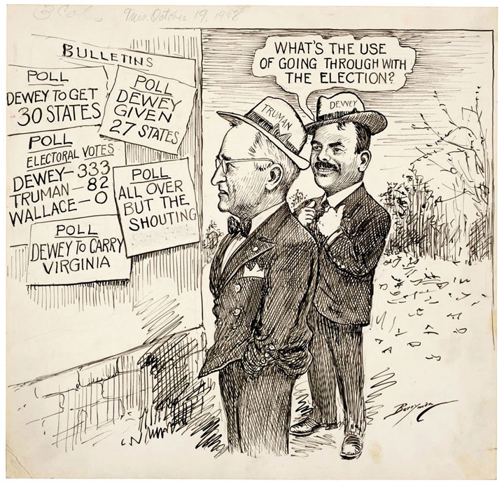
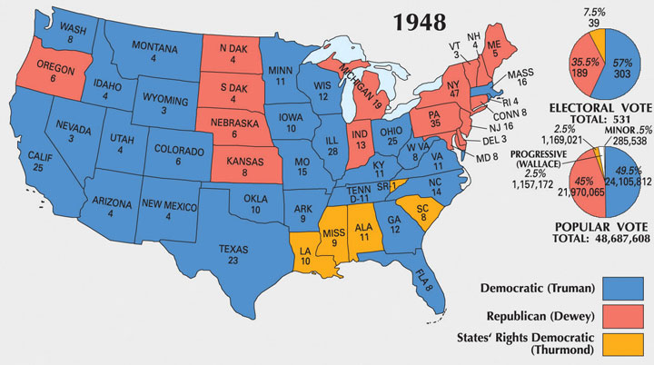

Of all the leading participants in World War II, only the United States prospered economically during the conflict. Throughout Europe and Asia, Axis and Allied nations alike were physically devastated and now faced financial catastrophe. Formerly mired in the most severe depression in its history, the United States emerged from the war with full employment, new technologies, dominance in banking and international trade, and the strongest military, and it was the only nation possessing the atomic bomb. While Europe and Asia faced reconstruction, the United States could concentrate its efforts on more construction. Within a decade, the majority of Americans owned their own homes, and over half of the world’s manufactured goods were made in the United States. The American dollar replaced the British pound sterling as the world’s standard currency, and US companies spread nearly as quickly across the globe as greenbacks. As Americans enjoyed this affluence, they also faced a number of domestic challenges, including the demobilization of the armed services, the question of women’s role in the postwar economy, and whether New Deal programs and wartime economic controls should continue in an era of peace and material prosperity.
Although the United States established worldwide military bases under the terms of the Lend-Lease Act, the nation rapidly scaled down the size of its forces following Japan’s surrender. From a wartime high of 12 million men and women, the military shrank to 1 million soldiers by the end of 1947. The United States granted Filipino independence in 1946 and maintained numerous bases on its commonwealth, the euphemism Americans used in place of the word “colony” when referring to the Philippine islands. By 1950, the military had been reduced to 600,000 personnel. The rapid demobilization led military officials to cancel orders for manufactured goods, which caused great concern among workers and factory owners. America’s wartime economy was largely based on defense spending, and demobilization also meant that most of the 12 million Americans serving in the armed forces would quickly return to civilian life. With the government cancelling its orders, what would become of the millions of veterans as they searched for civilian employment?
Economists estimated that the sudden influx of these men and women into the labor force combined with the end of wartime production would lead to unemployment rates similar to the latter years of the Great Depression. Other economists believed that these ominous forecasts underestimated personal savings and the immense pent-up demand for consumer products. They pointed out that US families had worked longer hours for higher wages and saved a higher percentage of their pay than at any time in history.
The demands of wartime production meant that US factories had produced tanks instead of automobiles and machine guns instead of sewing machines. As a result, millions of Americans had put their money in savings bonds and savings accounts in eager anticipation of the day they could purchase all of the items they dreamed about during the lean years of the Great Depression and the demanding years of the war. These more optimistic predictions proved correct as the United States enjoyed a postwar boom that rivaled the economic growth of the war years. Unemployment remained negligible as construction companies went back to work building homes, and US factories churned out a wide array of consumer goods for an eager public with cash to spend.
One of the reasons why unemployment did not spike was the Serviceman’s Readjustment Act of 1944, popularly known as the Montgomery GI BillA postwar program providing money for veterans so they could attend college or a trade school. The GI Bill also provided certain limited unemployment benefits and a loan program to help veterans purchase a home.. Veterans groups such as the American Legion lobbied Congress for its passage using a mix of moral suasion and economic self-interest. After World War I, they reminded Congress, veterans received little more than a final paycheck and a boat ride home. The result was a catastrophic shock to the labor market as millions of veterans sought jobs at the same moment the War Department stopped purchasing factory products. To prevent another Bonus March and perhaps the unemployment that caused it, the American Legion called on Congress to ease the shock on the labor market by providing returning veterans with college or vocational training. The GI Bill also provided modest unemployment pay of $20 per week for up to one year.
More than 6 million veterans took advantage of the GI Bill’s educational benefits, which covered tuition and books at most colleges and technical schools as well as a modest living allowance. The law revolutionized the US university system as schools rushed to accommodate veterans and the revenue they brought with them. The majority of these veterans would have likely never had the opportunity to attend college because they were not the children of wealthy and upper-middle-class families. Many of the veterans were not children at all, and the GI Bill inspired many colleges to build their first housing for married students. Veterans programs also reversed the trend toward female dominance in higher education as women represented only 3 percent of GI Bill recipients. Many colleges that had slight female majorities returned to Victorian-era gender ratios as thousands of veterans took up residence in army surplus tents on campus quads and eagerly awaited new dorms and their turn for a date with an overwhelmed coed.
Figure 9.7

Three members of different service branches pose in front of Kent State University in Ohio. These men were among 6 million veterans who took advantage of the GI Bill’s educational benefits after World War II.
While over half of those receiving educational benefits attended technical schools, the number attending college was equally vast. In 1947, roughly half of all new college students were veterans, and schools such as the University of Michigan tripled in size from 10,000 to 30,000 students. Most of these veterans hoped that their degrees would make them more competitive on the job market, which led colleges to reconsider their traditional liberal arts focus in favor of career-oriented programs and degrees. Many of the established leaders in academia feared that these changes would lead to a gradual abandonment of their mission to produce well-rounded graduates with strong analytical and communication skills.
A handful of critics even feared that the influx of nonwealthy students might lead to a reduction in academic rigor. Admission standards were not the only concern, as colleges rushed to hire new professors to meet the demand. Colleges in the California state system, for example, had to nearly double the number of instructors from 8,000 to 13,000 in 1946 alone. However, concerns about “dumbing down the curriculum” proved largely groundless as GIs performed so well in the classroom that traditional students referred to them as DARs—an acronym for “Damned Average Raisers.” Most university personnel welcomed the opportunity to serve veterans and viewed the GI Bill as a means by which a college education might become more accessible to those from less-affluent backgrounds. Perhaps most significantly, the GI Bill led to a dramatic increase in the education level of the US workforce, resulting in higher levels of productivity.
More than 2 million veterans also took advantage of the GI Bill’s home-loan program. In combination with other federal home-loan guaranty programs, millions of American families went from being urban renters to suburban homeowners in the postwar period. The GI Bill made no distinctions of race or ethnicity, but the climate of the 1940s meant that nonwhite veterans found it difficult to use the program to find a home. The same practices of redlining and restrictive covenants that prevented black, Latino, Asian, and Jewish homeowners from obtaining loans under the terms of New Deal programs also limited the ability of many veterans to use their GI Bill benefits to purchase a home.
In large cities, black realtors and black mortgage companies met the needs of black veterans, but even these businesses were unable to help veterans purchase homes beyond the handful of vacancies in ever-congested black neighborhoods. Members of other ethnic groups faced similar challenges in finding housing as Asian and Latino residents were frequently unable to find homes in “white” neighborhoods at any price. As a result, ethnic neighborhoods, barrios, and black communities expanded in the postwar period, while newer suburban communities became exclusively white. Neighborhood segregation emerged from individual choices, yet the process was anything but organic. Residential developers throughout the country mandated racial exclusion and then used the “whiteness” of their new suburban communities as a selling point to attract white homebuyers.
Figure 9.8
Many predicted that Truman would lose the election of 1948 to the popular reformer Thomas Dewey. The Chicago Tribune even projected Dewey as the victor after the election, although an actual count of the votes showed a different outcome. The early headline was famously lampooned by Truman himself.
Republicans attacked President Truman during the congressional elections of 1946 with slogans such as “To err is Truman.” That these tactics helped win control of the House and Senate reflected the frustrations of voters who believed the new president was either too similar to FDR or had strayed too far from the principles of the New Deal. In the next two years, Truman attempted to demonstrate that he was a genuine heir of FDR by sponsoring bills that would have raised the minimum wage, provided health care to the elderly, extended social security to more Americans, and increased funding for job creation and education programs. However the increasingly conservative Congress rejected each of these bills.
Truman responded in the presidential election of 1948 by using a strategy similar to what the Republicans had used against him. Truman sought to mobilize frustrated voters and asked the nation if they desired a change from the “do nothing” politicians in Washington and highlighting many of the New Deal-like programs he had supported but they had blocked. This strategy of appealing to the frustration of voters worked for the Republicans in 1946, and it also worked for Truman in 1948. However, these negative campaign tactics also left the victorious parties saddled with the burden of higher expectations from an increasingly discouraged electorate.
The situation appeared bleak for Truman in the months leading up to the 1948 election. Two blocks of voters bolted from his Democratic Party, one because they felt the president was too conservative in his domestic policies, and the other because they felt Truman was too liberal regarding civil rights. In 1946, Truman had fired Secretary of Commerce Henry Wallace, a popular leader within the left wing of the Democratic Party. At that time, Wallace openly challenged the president’s views about the Soviet Union and the necessity of the emerging Cold War. Wallace’s removal hurt Truman’s reputation with liberals in the following years.
When Henry Wallace accepted the candidacy of the new Progressive PartyComposed of Democrats who believed that Harry Truman was too conservative in both foreign and domestic politics, the Progressive Party emerged in 1948 under the banner of presidential candidate Henry Wallace. The Party called for an end to segregation, equal rights for African Americans, an end to the Cold War, and universal health insurance., many predicted that millions of more liberal Democrats would abandon Truman in favor of Wallace. However, most Democrats recognized that Wallace had little chance of winning the presidency in 1948 and feared voting for Wallace’s Progressive Party would do nothing but ensure a Republican victory. Perhaps more importantly, Wallace’s unambiguous support for racial equality, universal health insurance, and peaceful coexistence with the Soviet Union made it difficult for Republicans to paint Truman as a liberal. The president only mildly supported civil rights and was an ardent cold warrior, qualities that made him appear a safer choice with many moderates. Truman responded by waging an aggressive campaign aimed at appealing to voters who had supported the New Deal coalition of his predecessor and still equated Republican candidates with the interests of bankers and corporations.
Figure 9.9
The election of 1948 was closely contested between Harry Truman and Thomas Dewey. South Carolina’s Strom Thurmond ran on a prosegregation ticket under the banner of the States’ Rights Democratic Party, better known as the Dixiecrats.
The second group of voters that abandoned Truman was the States Rights Democratic Party, also known as the DixiecratsComposed of Southern Democrats and others who believed that Harry Truman was too liberal in terms of race, the Dixiecrats seceded from the national Democratic party in 1948 under the banner of Strom Thurmond, a South Carolinian who favored the continuation of racial segregation.. Northern delegates approved a moderate statement in support of civil rights reform during the 1948 Democratic National Convention. In an episode reminiscent of the splintering of the Democratic Party prior to the Civil War, thirty-five Southern delegates led by South Carolina’s Strom ThurmondA senator representing South Carolina for fifty years, Thurmond is most remembered outside of his native South Carolina for his leadership of the Dixiecrat Party in 1948. Thurmond ran for president on a platform calling for the maintenance of racial segregation, a cause he would support until the later years of his life. Thurmond was a Democrat who switched to the Republican Party in 1964 in response to the Democrat’s support of the 1964 Civil Rights Act. protested and walked out of the meeting under the banner of “state’s rights.” The Dixiecrats feared that the federal government had become too powerful and was imposing a liberal agenda upon the nation, which would lead to racial integration. Dixiecrat politicians also spoke to the frustration many hardworking Southern whites felt on issues beyond race. The Dixiecrats swept four Southern states in the election—mostly because Dixiecrat candidate Strom Thurmond was declared the official Democratic candidate in Louisiana, Mississippi, Alabama, and his home state of South Carolina. The intense popularity of Thurmond among Southern whites demonstrated to many conservatives that a platform built on homespun rhetoric, opposition to racial integration, and suspicion of Northern liberals polled well with many voters. As Truman and other Democrats displayed support for moderate civil rights reforms, conservative white Republicans and Democrats alike appealed to populist suspicion of liberal elites and race-baiting to poll large majorities throughout the 1950s and early 1960s.
Given the apparent disintegration of the Democratic Party, Republicans predicted an easy victory under the banner of their candidate Thomas DeweyAn attorney and special prosecutor that secured the conviction of leading gangsters like Lucky Luciano, Dewey rose to prominence and pursued a life in politics. A popular governor in New York, most predicted incorrectly that he would defeat Harry Truman in the 1948 election.. Dewey had risen to prominence as a special prosecutor who took on organized crime and was a popular governor of New York. Dewey received 46 percent of the popular vote against the seemingly unstoppable FDR in 1940, and many predicted he would easily defeat the much less popular Truman in 1948. Life magazine ran a picture of Dewey on its cover with the caption “The Next President,” while the New York Times advised the Democrats to surrender to the inevitable and save everyone the trouble of a campaign. Truman disagreed and ran a vigorous campaign touring over half of the states via train. Ironically, it was Dewey who seemed to follow the Times campaign advice. A fiscal conservative, Dewey believes a small, dignified, and noncontroversial campaign was the best way to ensure victory. Truman gained in the polls by calling Congress back into session weeks before the election where he promoted popular measures such as increases to the minimum wage. Still, the Chicago Tribune ran the headline “Dewey Defeats Truman” on the evening of the election. The next morning when the votes had actually been tallied, Truman had received 49.5 percent of the popular vote and 57 percent of the Electoral College.
The Democrats also recaptured the House and Senate in 1948. This Democratic Congress proved more conservative than those under FDR, failing even to repeal the antilabor provisions of the Taft-Hartley Act described in the next section. Given the inability of the Democrats to unite in favor of labor’s highest priority, it was doubtful that other traditionally Democratic priorities would fare well. However, Truman prodded Congress to enact universal health insurance, increase federal aid to schools, extend Social Security, expand public housing programs, and increase the minimum wage. Truman lumped these and dozens of other programs into something he called the Fair DealA term used by President Harry Truman to promote a number of his progressive domestic policies such as national health insurance for the poor and elderly, public housing, and federal support for education and job training.. Truman succeeded in passing major legislation creating public housing projects in 1949 and expanding Social Security to cover domestic and farm laborers in 1950. He also issued Executive Order 9981Issued July 1948 in response to demands by black leaders, President Truman issued this order declaring an end to segregation in the military. The order also required that all members of the military be given equal opportunity regardless of their race, ethnicity, religion, or national origins., which ordered an end to racial segregation in the military during the election of 1948. However, the majority of his proposals met conservative opposition, even within his own party.
Seeking to both associate with and expand the popular programs of FDR’s New Deal, Truman’s Fair Deal sought a dramatic expansion of federal power during a time of peace and economic prosperity. In addition to public housing and Social Security, he was able to raise the minimum wage to 75 cents per hour, and pass limited funding for flood control and irrigation. However, the president’s attempts to expand the welfare state beyond existing New Deal programs were unsuccessful. For example, Truman’s health insurance plan granted the federal government the power to set prices. This led not only to a massive increase in the size and scope of the federal government but also to powerful interests in the medical field to oppose the bill. Doctors and hospitals united with conservatives to block Truman’s health care bill by raising doubts that it would reduce costs and raising concern that the quality of care would decrease. Others simply sought to smear the plan by claiming it resembled the kind of totalitarianism practiced by Hitler.
The government had imposed price controls and other measures to control inflation during World War II. These controls remained until the summer of 1946, after which prices rose dramatically. Some items doubled in price, while a general index of consumer goods indicated an average price increase of nearly 20 percent. Inflation also rose, so bank deposits and wartime bonds that workers had purchased were worth less than before, while paychecks bought less than they had during the war years. Congress passed a few measures to reestablish price controls on certain items and rents. Within a couple years, the forces of supply and demand eliminated most of the worst cases of price increases, yet most goods were still substantially more expensive than they had been just a few short years ago. The falling value of the dollar made US goods seem less expensive overseas, and the Marshall Plan helped foreign markets recover further enabling the purchase of American-made goods. Although the rapid price increases alarmed many Americans, the postwar period was still one of material progress.
However, in the immediate wake of the end of price controls, many workers were angered by dramatic price increases that they believed vastly exceeded wage increases. One-third of the labor force (excluding those in agriculture and domestic labor) were union members and nearly 5 million workers participated in strikes in 1945 and 1946. Entire industries such as mining saw the majority of their workers on strike. More than 700,000 steelworkers participated in the largest strike in US history, demanding wage increases that kept pace with rising steel prices. Truman feared that strikes of this magnitude could seriously disrupt the postwar economic progress and even threaten national security if permitted to continue. Truman addressed Congress asking for a measure permitting him to draft striking workers into the military that might have passed had steel workers and management not settled their strike.
Figure 9.10

Saturday afternoon street scene in Welch, McDowell County, West Virginia, August 24, 1946. The population and local economy of Welch was directly tied to coal mining and steel production, which boomed during the early twentieth century. Today the population of McDowell County has dropped to just over one-fifth of the nearly 100,000 residents that made this the largest coal-producing county in America during the 1950s.
Hostility toward the growth of labor unions and powerful leaders such as John L. Lewis of the United Mine Workers led to a growing movement to modify the terms of the 1935 Wagner Act. Congressmen Robert Taft and Fred Hartley drafted legislation that did more than modify the Wagner Act; it completely reversed the legislative advances made by labor unions in the first half of the twentieth century. The Taft-Hartley ActPassed by Congress over President Truman’s veto in June 1947, the Taft-Hartley Act restricted many of the powers of unions. Among the provisions are the elimination of rules mandating that workers join unions and requirements that labor leaders give advance notice before they can call a strike. banned closed shops and union shops, arrangements that required employees to either belong to a union prior to being hired or join the union as a condition of employment. The law also banned secondary boycotts where other union members refused to purchase the goods of a particular company. The law also required union leaders to sign affidavits disclaiming any affiliation with the Communist organizations—a measure union leaders protested as an attempt to unfairly connect labor unions with leftists and radicals. The law also limited the use of union funds in political campaigns and permitted states to pass “right-to-work” laws that limited the organizational methods used by unions. Perhaps most importantly, the law also granted presidential authority to postpone any strike that might affect national interests for up to eighty days.
Although President Truman had just fought a personal battle with Lewis and resented the power of many union leaders, he believed that the provision of Taft-Hartley was too severe. Despite the president’s veto, Taft-Hartley became law in 1947. The immediate effect on labor unions was not nearly as severe as labor leaders feared, although unions no longer enjoyed 100 percent membership through the enforcement of union and closed shops. Perhaps the most significant consequence of Taft-Hartley was the decline of smaller unions and the failure to organize new unions in the expanding service and technology fields, as well as the continued failure of unionization in the American South. Leading unions waged a campaign known as Operation DixieAn unsuccessful campaign by the Congress of Industrial Organizations (CIO) and other labor leaders to organize more unions in the American South following the end of World War II. The South was important to labor as more companies established factories in the region precisely due to the region’s political conservatism and hostility to labor unions. in the late 1940s aimed at organizing unions in the South. Business interests prevailed against the would-be organizers, largely by threatening to employ black workers if whites joined unions.
Figure 9.11

Leaders of national and local unions alike mobilized against the Taft-Hartley Act. These leaders produced hundreds of posters and flyers, each drawing attention to the potential consequences of the new law upon workers’ right to bargain collectively.
Few new homes were constructed between 1941 and 1945 as the nation concentrated its efforts constructing weapons and machines to deliver men and material to the battlefield. The subsequent rapid demobilization combined with pent-up demand and wartime consumer savings created the perfect storm for a severe housing crisis. In response, many developers began to mass-produce homes using assembly line tactics. The new homes were often lacking in terms of architectural originality and craftsmanship, but residential developers had waiting lists of customers who eagerly awaited the opportunity to buy any new home. The most successful of these developers was William LevittAn entrepreneurial real-estate developer who utilized mass-production to create entire neighborhoods of inexpensive and homogenous single-family homes. Levitt’s techniques influenced the development of suburbs and spurred home construction throughout the nation., who rapidly converted farmland on the outskirts of Long Island into Levittown, a planned community of 17,000 homes.
Levitt built the homes faster and more efficiently than any other developer did by dividing his nonunion laborers into specialized teams. Each team had a specific task that they performed using preassembled parts of the home. For example, one team nailed drywall while another installed preconnected plumbing components. Once the team had completed its task, they simply walked to the next house and repeated the process. Every house was nearly identical, while every street featured the same landscaping, with identical trees planted every twenty-eight feet. Owners agreed to make only minor modifications to the home and follow a standard maintenance plan that would protect property values. “No man who owns his house and lot can be a Communist,” Levitt claimed, “he has too much to do.” Cold warrior or not, the owner of a Levitt home certainly demonstrated the benefits of free market Capitalism mixed with the welfare state. With the assistance of Federal Housing Administration loans, new homes could be secured with down payments of less than $100 and monthly payments of about $60. However, not all Americans were eligible for these deals. Not only were the homes nearly identical, but the residents of Levittown were equally homogenous. Racially restrictive covenants limiting who could buy or rent were built into the contracts of Levitt’s housing developments throughout New York, New Jersey, and Pennsylvania. The same was true of most suburban developments. Levitt explained his refusal to sell or rent to any African American family as a business decision. According to Levitt, the vast majority of whites would refuse to buy or rent homes in an integrated neighborhood.
William Levitt had plenty of examples to support his theory. The wartime housing shortage placed enormous pressure on existing black and ethnic neighborhoods. Several million black and Mexican American families migrated North and West in search of jobs and racial tolerance. They rarely found either, being the last hired and given the lowest wages. Even those that managed to find good jobs had difficulty finding decent housing, settling instead for apartments created by dividing existing rentals in black and ethnic neighborhoods. As Levitt predicted, even those who were permitted to purchase homes in previously “white” neighborhoods soon found that their presence would not be tolerated by their would-be neighbors. From Chicago to St. Louis to Los Angeles, black and Mexican American homeowners saw their homes destroyed as white fire companies sprayed water on adjacent buildings to ensure that the flames observed racial boundaries.
Figure 9.12

This aerial photo of a new suburban housing area demonstrates the growth of residential areas beyond the city core as well as the homogeneity of many suburban neighborhoods.
Housing for the poor of all races was limited but was especially desperate in the West as the populations in many cities doubled in less than a decade. Nearly 200,000 Mexican Americans lived in crowded barrios throughout San Antonio. The situation was even worse in Los Angeles when one of the largest Latino neighborhoods was acquired by the city through eminent domain legislation. The city intended to replace the single-family homes with public housing that would be both low-cost and accommodate more residents. However, after existing housing was razed, area whites protested against the construction of the housing project. The land stood empty for years until acquired by the owner of the Brooklyn Dodgers who agreed to bring his team west in exchange for the city building the team a new stadium.
Even as thousands of suburbs sprouted across Texas and California, racial minorities found fewer and fewer homes that they could buy or rent outside of inner city slums. Many cities hoped that a new program called Urban Renewal might help to remove these slums and replace them with decent housing in neighborhoods with less crime. The National Housing Act of 1949 supported cities with funds for “slum clearance” with the hope that new construction in those areas would somehow fix the structural issues that had led to the decline of those urban neighborhoods. However, as had been the case in Los Angeles, those who were displaced usually ended up on their own with even fewer housing options. In the city, some of the land ended up being used to build overpasses and parking lots. In addition, housing projects quickly became new slums with conditions often aggravated as cities crammed more people into smaller spaces.
The situation on the West Coast was similar for the thousands of Japanese families who had lost their homes because of their forced relocation. Even the “white” soldiers who had married women of Asian descent during their time overseas found that their new families were not welcome in their old neighborhoods. Chinese American veterans who married overseas were not permitted to bring their wives back to the United States until a congressional amendment was made to the War Brides Act nearly two years after the surrender of Japan. Even then, it was not until 1948 that the Supreme Court declared that California laws barring the marriage of Asians and Caucasians were unconstitutional.
Even before the war was officially over, the government began scaling back and eventually canceled hundreds of military contracts for billions of dollars of supplies and equipment. Within days of the surrender of Japan, these companies laid off over a million workers. A disproportionate amount of these workers were women, the last to be hired in many defense industries and now the first to be fired. In most cases, companies made no attempt to hide the fact that female workers were losing their jobs because they were women. Furthermore, many women viewed their labor as temporary and considered it their duty to give up their jobs for returning male veterans. Postwar surveys determined that the vast majority of men and women in the United States agreed that female workers should be replaced with male workers. A 1946 survey asked if “an efficient woman whose husband could support her” should be discharged and her job given to “an inefficient man who had a family to maintain.” Seventy-five percent of men and 70 percent of women reportedly agreed with that statement. Even though most women indicated that they would like to keep their jobs, notions of gender and the fear that continued female employment in “male” jobs would lead to the unemployment and emasculation of veterans led most women to accept their termination without protest.
Millions of women voluntarily left their jobs or were laid off, but the predicted postwar recession never occurred due to a massive increase in consumer spending and the provisions of the GI Bill. Unemployment remained low during the postwar boom, yet the nation still returned to prewar notions about gender and the workplace. For many women, however, wartime employment provided both income and a sense of pride. For most, their new roles as mothers and wives filled the void, yet as later studies would demonstrate, many women felt that their lives were still missing something. However, the culture of the postwar period celebrated motherhood and featured a dramatic increase in the number of children born each year, a phenomenon called the Baby BoomA period between the end of World War II and the mid-1950s when birthrates suddenly increased due to the return of military personnel, the desire of young Americans to start families, and the economic security allowing established couples to have more children. An estimated 80 million Americans were born in these years.. Millions of soldiers eagerly embraced the notion of returning to family life. US women bore more children per capita between 1946 and 1964 than at any time in history. In fewer than twenty years, the nation’s population increased by nearly one-third as young couples began families. The increase was due not only to the returning veterans but also to the economic security of the era that convinced many families that they could finally afford another child. The era also witnessed an unprecedented number of divorces as unexpected pregnancies led to hasty marriages that soon failed.
The sudden increase in divorces suggests that the popular imagination of love and sex in the postwar era needs to be reconsidered. Contrary to the historical image of the era, sex and marriage in the 1950s did not follow a script as predictable as the sitcoms of the age. In 1948 and 1953, Indiana University professor Alfred C. Kinsey published two studies on male and female sexuality, often collectively referred to as the Kinsey ReportA term used to describe two lengthy scholarly works by Alfred Kinsey on human sexuality. The reports shocked Americans with their statistics on homosexuality and marital infidelity, but they also helped to challenge the public’s reluctance to discuss issues regarding sex.. These publications shocked the nation with their statistics and charts that indicated that 50 percent of men had committed adultery and that nearly as many women had engaged in premarital sex. However, the most shocking revelation was that two of the cultural taboos associated by most Americans with sexual deviance at this time—homosexuality and marital infidelity by married women—were not uncommon. The report indicated that one-third of men had committed at least one homosexual act and nearly a quarter of women had cheated on their husbands. While many criticisms regarding Kinsey’s methods and accuracy later led many to discredit the accuracy of his statistics, over a quarter million Americans purchased his books. Kinsey’s conclusions may have been inaccurate, but they helped to spread awareness of homosexuality and challenge the notion that only men were having extramarital affairs.
Following World War II, more Americans enjoyed more disposable income and more leisure time than at any other time in history. Between labor-saving devices, a gross national product that doubled each decade, and the labor movement’s successful push for paid vacations and forty-hour workweeks, Americans had more choices for leisure and cultural activities than ever before. For the first time, Americans embraced professional sports teams in football and basketball. But baseball remained king. And in 1947, the color line in the Major Leagues that had barred African American players since Moses Fleetwood Walker’s 1884 season was broken by Jackie RobinsonA star athlete that excelled in football, baseball, and track at UCLA, Robinson challenged segregation in the military and eventually became the first African American star player in the Major Leagues. Robinson was the National League Rookie of the Year in 1947 and led the Brooklyn Dodgers to several pennants and a World Series victory in 1955. In the later years of his life, he passionately advocated for opportunities for African Americans to become coaches and managers..
Robinson was acquired by the Brooklyn Dodgers by a coach who recognized that integration would make his team better and immediately boost gate receipts in a diverse city such as New York. Branch Rickey offered no compensation to the Kansas City Monarchs, the legendary Negro League team for whom Robinson had played. Yet his act in breaking the color line demonstrated a commitment to racial equality few in the Major Leagues shared. The on-field success and selfless demeanor of Robinson led the Dodgers to the pennant in his rookie season and inspired several other teams to integrate in the next three seasons.
By applauding Robinson, a man did not feel that he was taking a stand on school integration, or on open housing. But, for an instant, he had accepted Robinson simply as a hometown ball player. To disregard color even for an instant, is to step back away from the old prejudices, the old hatred. That is not a path on which many double back.
—Author and former Dodger announcer Roger Kahn in his introduction to The Boys of Summer
Robinson’s entry into the Major Leagues was the culmination of decades of protest against the color line in baseball by black newspapers, Jewish sportswriters, and left-wing activists. Despite the staunch support for integration by socialist journals and organizations, Capitalism proved to be the driving force behind the rapid integration that followed Robinson’s debut. Even if the Dodgers had won the pennant, the increase in ticket sales would have led more teams to consider integration. Robinson was the National League’s Rookie of the Year, and Dodger home attendance broke records as thousands of curious whites, African American families, and supportive ethnic minorities flocked to see Robinson play.
Rickey’s timing was fortunate as millions of Americans had more spare time and disposable income than at any other time in history. As unemployment continued to stay low and wages continued to increase, advertisers took advantage of the affluence and transitioned from selling the war to selling consumer goods. Corporations that had little to advertise during the war suddenly produced an array of products that marketers now sold to an American public eager for the good life, or at least a life of more goods. Television was not a large part of this renewed emphasis on marketing until the mid-1950s, when over half of the population owned a television set. By this time, the television had become such a staple in American life that TV Guide, a magazine listing what shows would be broadcast, became one of the best-selling magazines in the nation.
New media technology gave rise to a dominant culture that celebrated consumption and affluence, but it also helped to spur a counterculture movement that rejected the materialism of the era. Critics of the dominant culture have always existed in America, especially during periods of increased consumption. Arthur Miller’s Death of a Salesman (1949) forced Americans to confront the character of Willy Loman, an aging salesman who bought in fully to the economic orthodoxy of the era. Loman worked hard and developed an identity based on his job. Conscious of his decline but confident that he had achieved success through hard work, Loman is confronted with the hollowness of materialism when his boss shatters his self-created illusion that he was a business success.
British writer George Orwell’s 1984 was even more critical of modern society. Set in the futuristic dystopia of the 1980s, Orwell depicted a society that had surrendered its ability to think critically to a centralized government that controlled nearly every aspect of life. The protagonist in Ralph Ellison’s Invisible Man (1952) experienced a different brand of totalitarianism as an African American man searching for a meaningful existence in a white-dominated city. “You ache with the need to convince yourself that you do exist in the real world…you strike out with your fists, you curse and swear to make them recognize you. And alas, it’s seldom successful.”
As popular as these books were, the counterculture message of the 1950s ironically reached a broader audience due to improvements in transportation and communication. Neighborhoods such as Greenwich Village in New York were home to artists and writers who helped to create a counterculture known as the Beat Movement. The Beats, or beatniks as they were often called, disdained Capitalism and its conspicuous materialism in an often-quixotic search for some higher form of expression and experience. They viewed themselves as nonconformists, often shunning work and other societal expectations to search for higher consciousness. The beat lifestyle valued daily meditation, alternative music and poetry, and displayed an unapologetic tolerance for those who experimented with psychotic drugs. The beatniks revered the ideas of authors and poets such as Allen Ginsberg, a brilliant mind who frequently found inspiration in mind-altering drugs. Ginsberg railed against materialist conformity in favor of authentic experience through impulsive action. Many Americans viewed the beatniks as degenerates and slackers who were self-absorbed and nihilistic. Others were intrigued by the notion of an alternative to their daily routine, even if they refused to abandon its comforts and security. However, due to the prominence of television and radio, most Americans were at least aware of these new self-styled hipsters, just as the nation would be aware of the hippies a generation later.
While the beatniks searched for a higher existence, another group of Americans was creating a new and uniquely American form of expression. Rock ’n’ roll was born from a union of amplifiers, electronics, and traditional rhythm and blues. Because it had grown from churches and had its roots in West African call-and-response traditions, the pioneers of this new rhythm and blues sound were African Americans. White musicians like Elvis PresleyA native of Mississippi and Tennessee, Presley was inspired by country music and rhythm and blues and merged these styles into a new genre of music that became known as rock ’n’ roll. followed their lead and enjoyed both instant celebrity as well as controversy. If imitation is a form of flattery, Presley was deeply impressed by the style of rhythm and blues performed by traveling black musicians. For this reason, white parents feared Presley’s “black” music and style might start their daughters down the aisle of interracial marriage. Some attempted to ban certain musicians and albums, while others protested against rock ’n’ roll concerts in their community. Frank Sinatra simply thought the music itself was terrible, if in fact rock ’n’ roll could even be considered music at all. He referred to the new genre as “the most brutal, ugly, desperate, vicious form of expression” to ever be unleashed on the American airwaves. Like generations before them, teenagers defied their parents and embraced this uniquely American form of music. Few of these children were taking a stand on civil rights by listening to white musicians who rejected the notion that good music recognized the color line. However, the growth of rock ’n’ roll increasingly brought white suburbanites and the music of black America together, if only through the airwaves. US businessmen responded to the demand as Capitalists usually do, producing 600 million rock albums by the end of the decade. It was not yet clear if rock ’n’ roll was here to stay, but it certainly made its mark on the 1950s.
Both the controversy and profitability of rock ’n’ roll personifies the youths of the 1950s. Like all young people, the teenagers of the 1950s craved excitement and sought their own identity beyond the inherited worldview of their parents. Affluence and technology propelled their search for authentic experience as millions of white youths cautiously embraced “black” music from the comfort of their suburban homes and malt shops. Rock ‘n’ roll offered a temporary escape from the domination of parents and the sanitized culture of affluent white America. Yet the affluence of white America was the very reason the genre spread beyond Southern juke joints and Harlem nightclubs. Technology allowed music to be recorded, reappropriated, and redistributed by white musicians such as Elvis Pressley. Moreover, while few whites would venture to the black neighborhoods of Detroit, the sounds of Motown could be purchased at the local record shop. By the middle of the decade, white and black artists alike were pushing the boundaries of rock ’n’ roll. The new generation eagerly bought up the music and its association with rebellion against the monotony of the adult world they each knew would soon become their reality.